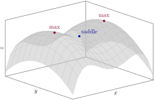

1. True or False.
True.
-
This is true for single-variable functions but no longer holds in two dimensions. For example, the function \(f(x,y) = -x^4 + x^2 - \frac12 y^2\text{,}\) shown in Figure 5.14.74, has two local maxima at \(\left(\pm\frac{1}{\sqrt2}, 0\right)\) with a saddle point at the origin lying between them, and no local minimum.

A three dimensional surface with two rounded peaks of equal height, one on the left and one on the right, separated by a saddle shaped dip in the middle. Away from the peaks the surface falls off in every direction, so there is no lowest point.Figure 5.14.74. The graph of \(f(x,y) = -x^4 + x^2 - \frac12 y^2\text{:}\) two local maxima with a saddle point between them, and no local minimum. False.
-
This is true for single-variable functions but no longer holds in two dimensions. For example, the function \(f(x,y) = -x^4 + x^2 - \frac12 y^2\text{,}\) shown in Figure 5.14.74, has two local maxima at \(\left(\pm\frac{1}{\sqrt2}, 0\right)\) with a saddle point at the origin lying between them, and no local minimum.A three dimensional surface with two rounded peaks of equal height, one on the left and one on the right, separated by a saddle shaped dip in the middle. Away from the peaks the surface falls off in every direction, so there is no lowest point.
Figure 5.14.74. The graph of \(f(x,y) = -x^4 + x^2 - \frac12 y^2\text{:}\) two local maxima with a saddle point between them, and no local minimum.
If \(f(x,y)\) has two local maxima, then it must have a local minimum too.
Justify your answer fully: give a proof if the statement is true, or a counterexample if it is false.